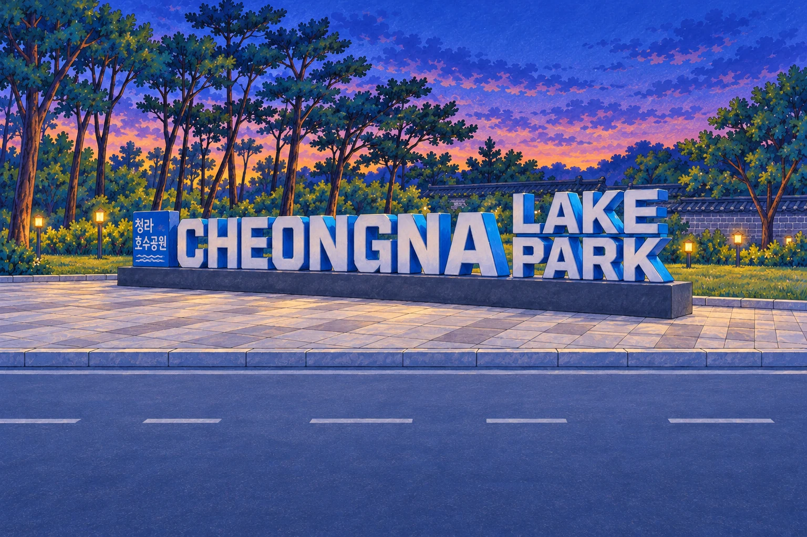
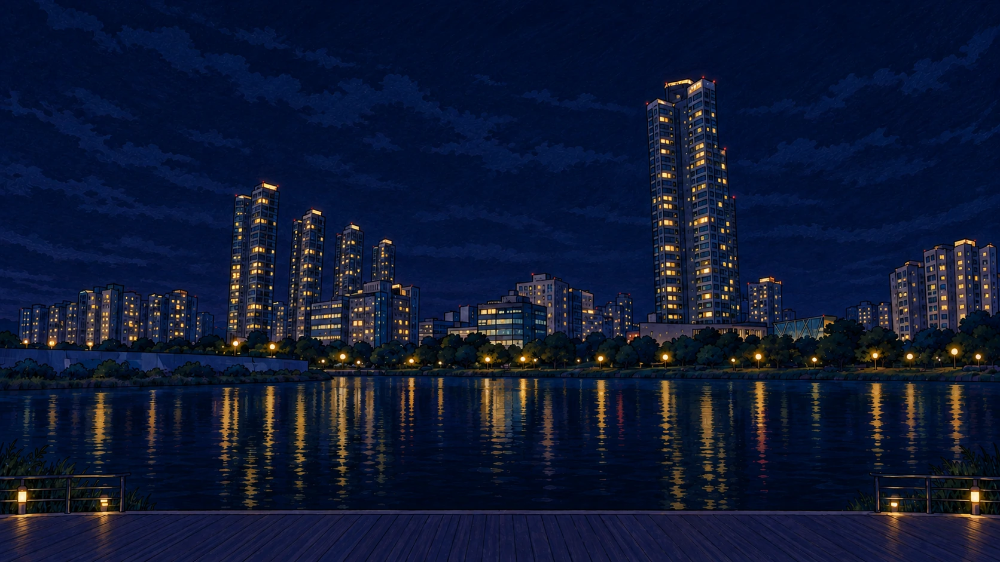

CHAPTER 03 · 서해·검단우리가 밝힌 호수의 밤
청라루에서 음악분수까지,
민우와 서연의 마지막 호숫가 여행.
 실제 장소를 참고해 재구성한 창작 일러스트
실제 장소를 참고해 재구성한 창작 일러스트
서해·검단 · 챕터 3앞선 여행의 빛을 찾아 주세요.
검단선사박물관과 세어도·정서진을 완료하면
청라호수공원으로 여행을 이어갈 수 있어요.
지역 월드맵으로 →
 실제 장소를 참고한 창작 일러스트
실제 장소를 참고한 창작 일러스트

금빛 점을 따라 호숫가 길을 걸어요.
실제 배치를 참고해 거리를 줄인 산책 지도 · 북쪽 ←
✦✦✦
THE LIGHT OF CHEONGNA청라호수공원의 빛
하나로 모은 바둑돌의 빛,
똑같이 나누고 다르게 조합한 음악의 빛.
서해·검단 · 여행의 마지막 페이지우리가 호수의 밤을 밝혔어요.
✦검단선사박물관✦세어도·정서진✦청라호수공원
세 곳에서 찾은 수학의 빛이 하나의 여행이 되었어요.
바둑돌의 빛을 모아라
같은 줄을 살피고, 다음에 남을 돌까지 생각했어요.
여섯 마디 음악분수
24 ÷ 6 = 4 · 같은 4박으로 서로 다른 여섯 리듬을 만들었어요.
지역 월드맵으로 →
체험 미리 보기 · 지역 진행 기록에는 반영하지 않아요.
이 브라우저에 기록을 저장하지 못했어요. 현재 창에서는 계속 여행할 수 있어요.